배관기능장 (2005-04-03 기출문제)
1과목: 임의구분
1. 배관 지지장치의 용도에 관한 설명 중 잘못된 것은?
- 파이프 슈(pipe shoe) : 관의 수평부 곡관부 지지
- 앵커 (anchor) : 배관계에서 발생한 충격을 완화
- 가이드(guide) : 관의 회전제한, 축방향의 이동 안내
- 콘스탄트 행거 : 배관의 상하 이동을 허용하면서 관 지지력을 일정하게 유지
(정답률: 84%)

2. 급수설비 시공시 용도가 다른 배관과 잘못 연결되지 않도록하고, 상수계통 배관의 공급단에는 송출구와 수수용기 사이에 송수구의 공간을 확보하고, 확보할 수 없을 때는 역류 방지용 수전 또는 무엇을 설치해야 하는가?
- 진공 차단기(vacuum breaker)
- 볼 이음(ball joint)
- 푸트 밸브(foot valve)
- TS 이음
(정답률: 65%)
3. 보기와 같은 파이프 랙(pipe rack)이 있다. 연료유 라인, 연료가스 라인, 보일러 급수라인 등의 유틸리티(utility) 배관은 어디에 배열하는 것이 적합한가?
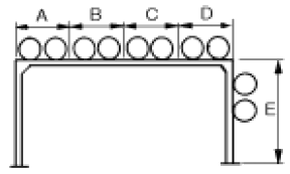
- A부분 및 D부분
- B부분 및 C부분
- C부분 및 D부분
- D부분 및 E부분
(정답률: 90%)
4. 백 필터(bag filter)를 사용하는 집진방식인 것은?
- 원심력식
- 중력식
- 전기식
- 여과식
(정답률: 92%)
5. 화학 세정작업에서 스케일이 경질일 때, 경도 성분, 실리카 등이 많을 때 산세정 단독으로는 용해가 곤란한 경우에 산세정 전처리로 실시하는 것은?
- 유화 처리(油化 處理)
- 중화 세정(中和 洗淨)
- 소다(soda) 세정
- 유기용제 세정
(정답률: 61%)
6. 배수 수직관과 수평 분기관이 합류되는 지점의 수직관에서 내려온 배수의 수류에 선회력을 만들어 공기 코어가 지속 되도록 만든 배수 통기 방식은?
- 섹스티아 방법
- 결합 통기 방법
- 신정 통기 방법
- 소벤트 방법
(정답률: 89%)
7. 부식, 마모 등으로 작은 구멍이 생겨 유체가 누설될 경우 고무제품의 각종 크기로 된 볼을 일정량 넣고, 유체를 채운 후 펌프를 작동시켜 누설부분을 통과하려는 볼이 누설 부분에 정착, 누설을 미량이 되게하거나 정지시키는 응급 조치법은?
- 코킹법
- 스토핑 박스법
- 호트 패킹법
- 인젝션법
(정답률: 72%)
8. 공기조화 설비의 닥트 주요 요소인 가이드 베인의 용도로 다음 중 가장 적합한 설명은?
- 대형 닥트의 풍량 조절용이다.
- 소형 닥트의 풍량 조절용이다.
- 닥트 분기 부분의 풍량조절을 한다.
- 굽은(회전) 부분의 기류를 안정시킨다.
(정답률: 84%)
9. 소화설비장치 중 연결 송수관의 송수구 설치에 관한 설명으로 틀린 것은?
- 송수구는 쌍구형으로 하고, 소방차가 쉽게 접근할 수 있는 위치에 설치한다.
- 송수구는 연결 송수관의 배관마다 1개 이상을 지면으로 부터 높이 0.5m ∼ 1m 이하의 위치에 설치한다.
- 건식 송수구 부근에는 반드시 체크밸브를 설치한다.
- 송수구의 결합 금속구는 구경 65㎜의 것을 설치한다.
(정답률: 68%)
10. 강성이 큰 I 빔으로 만든 배관 지지대로 정유시설의 송수관에 가장 많이 쓰이는 지지금속인 것은?
- 로울러 슈
- 리지드 서포트
- 파이프 슈
- 스프링 서포트
(정답률: 76%)
11. 다음 배관에서 일반적으로 방로, 방동 피복을 하지 않는 관은?
- 통기관
- 급수관
- 증기관
- 배수관
(정답률: 88%)
12. 설비자동화 유압시스템의 결함 중 토출유량이 감소하는 원인이 아닌 것은?
- 어큐뮬레이터의 압력변화가 없다.
- 작동유의 점성이 너무 높다.
- 작동유의 점성이 너무 낮다.
- 탱크 내의 유면이 너무 낮다.
(정답률: 65%)
13. 다음 중 자동제어에서 시퀀스 제어(Sequence control)를 설명한 것으로 가장 적합한 것은?
- 미리 정해 놓은 순서에 따라 제어의 각단계를 순차적으로 행하는 제어
- 미리 정해놓은 순서에 관계없이 불규칙적으로 제어의 각 단계를 행하는 제어
- 출력신호를 입력신호로 되돌아 오게 하는 되먹임에 의하여 목표값에 따라 자동적으로 제어
- 입력신호를 출력신호로 되돌아 오게 하는 피드백에 의하여 목표값에 따라 자동적으로 제어
(정답률: 94%)
14. 옥내 및 옥외 소화전 소화설비 배관에 관한 주의사항으로 틀린 것은?
- 소화전 배관은 가능한한 굴곡배관이 아닌 직선배관으으로 시공한다.
- 배관을 매설할 경우에는 중량물 통과와 동결에 대한 문제를 반드시 고려해야 한다.
- 펌프가 작동하지 않을 경우 수온 상승에 의한 팽창을 억제하기 위하여 순환 배관을 하지 말아야 한다.
- 옥내 배관시에는 방습 및 보온에 주의해야 한다.
(정답률: 88%)
15. 다음은 파이프 랙크상의 배관 배열방법을 설명한 것이다. 틀린 것은?
- 규모가 작은 프로세스 장치는 파이프 래크의 한쪽만 프로세스 기기측으로 한다.
- 파이프 루프(pipe loop)는 파이프 래크의 다른 배관보다 500-700㎜ 정도 높게 배관한다.
- 관 지름이 클수록 온도가 높을수록 파이프 래크상의 중앙에 배열한다.
- 파이프 래크의 폭은 파이프에 보온, 보냉하는 경우는 보온, 보냉하는 두께를 가산하여 결정한다.
(정답률: 80%)
16. 밸브판이 밸브시트에 대해 직선적으로 미끄럼운동을 하여 움직이기 때문에 전개시 저항이 거의 없고 고압에 견디는 구조이므로 간선 관로의 차단용으로 다음 중 가장 적합한 것은?
- 슬루스 밸브
- 글로브 밸브
- 앵글 밸브
- 다이어프램 밸브
(정답률: 79%)
17. 폴리부틸렌관(Poly Butylene Pipe ; PB) 특징 설명으로 틀린 것은?
- 온돌 난방배관시 시공성이 우수하다.
- 부분 파손시 시공이 어렵다.
- 결빙에 의한 파손이 적다.
- 신축성이 좋으나 열에 약하다.
(정답률: 63%)
18. 에터니트관이라고 불리는 석면 시멘트관에서 1종관의 사용 정수두로 적합한 것은?
- 45m 이하
- 75m 이하
- 100m 이하
- 125m 이하
(정답률: 62%)
19. 다음 중 구리관의 설명으로 잘못된 것은?
- 내식성이 좋아 담수에는 부식의 염려가 없다.
- 난방효과가 우수하며 스케일 생성에 의한 열효율의 저하가 적다.
- K, L, M형 중에서 두께가 가장 두꺼운 것은 K형이다.
- M 형은 주로 의료 배관용으로 만 쓰인다.
(정답률: 84%)
20. 신축이음의 종류 중 일명 팩레스(packless) 신축이음쇠라고 부르며 스테인리스제 또는 인청동제로 제작된 것은?
- 루프형(loop type) 신축이음
- 슬리브형(sleeve type) 신축이음
- 스위블형(swivel type) 신축이음
- 벨로스형(bellows type) 신축이음
(정답률: 91%)
2과목: 임의구분
21. 프리스트레스드 콘크리트관에 대한 설명으로 틀린 것은?
- 일반적으로 PS관이라 한다.
- 메이커에 따라 PS 흄관이라고도 한다.
- 내압의 작용하는 경우에는 압력관이 적합하다.
- 호칭 지름은 100 ‾1000mm 까지 이다.
(정답률: 56%)
22. 일반적인 파이럿식 감압밸브에 대한 설명 중 틀린 것은?
- 최대 감압비는 3 : 1 정도이다.
- 1차측 적용압력은 10 kgf/cm2 이하이다.
- 2차측 조정압력은 0.35 -8 kgf/cm2 정도이다.
- 1차측 압력의 변동과 2차측 소비 유량변화에 관계없이 2차측 압력은 일정하게 유지된다.
(정답률: 74%)
23. 은분이라고도 하며 방청효과가 크고, 내구성이 풍부한 도막을 형성하며, 400-500℃의 내열성을 지니고 있어 난방용방열기 등의 외면에 도장하는 것은?
- 광명단 도료
- 알루미늄 도료
- 산화철 도료
- 고농도 아연 도료
(정답률: 77%)
24. 맞대기 용접 이음용 롱엘보(long elbow)의 곡률 반지름은 강관 호칭지름의 몇 배인가?
- 1배
- 1.2배
- 1.5배
- 2배
(정답률: 80%)
25. 다음 피복 재료 중 무기질 보온 재료가 아닌 것은?
- 펠트
- 석면
- 암면
- 규조토
(정답률: 72%)
26. 폴리에틸렌관의 용착슬리브 이음시 가열 지그를 이용한 용착(가열)온도로 다음 중 가장 적합한 온도는 약 몇 ℃ 정도인가?
- 100
- 150
- 200
- 300
(정답률: 67%)
27. 비중 1.2 의 유체를 4m3/min 유량으로 높이 12 m 까지 올리려면 펌프의 동력은 약 몇 kW 가 필요한가?
- 9.41
- 10.14
- 11.2
- 15.01
(정답률: 54%)
28. 다음 중 소켓 이음시 누수의 주요 원인으로 가장 적합한 것은?
- 야안의 양이 너무 많고 납이 적은 경우
- 코킹 세트를 순서대로 사용한 경우
- 용해된 납물을 1회에 부어 넣은 경우
- 코킹이 끝난 후 콜타르를 납 표면에 칠한 경우
(정답률: 89%)
29. 강관을 가열 굽힘할 때의 가열 온도로 다음 중 가장 적합한 것은?
- 500 ∼ 600℃
- 1200℃ 정도
- 800 ∼ 900℃
- 1350℃ 정도
(정답률: 79%)
30. 관로를 흐르는 유체에 관한 설명 중 올바른 것은?
- 마찰 손실은 관경에 비례한다.
- 유량은 관경의 2승에 비례한다.
- 마찰손실은 속도의 2승에 반비례한다.
- 유량은 속도에 반비례한다.
(정답률: 46%)
31. 다음 중 폴리부틸렌관만의 이음 방법인 것은?
- 압축 이음 (compressed joint)
- 플라스턴 이음 (plastann joint)
- 에이콘 이음 (acorn joint)
- 몰코 이음 (molco joint)
(정답률: 94%)
32. 토치 램프에 사용할 휘발유를 저장한 곳에 비치하는 것으로 가장 적당한 것은?
- 모래
- 석회
- 시멘트
- 물
(정답률: 94%)
33. 칼라 속에 2개의 고무링을 넣고 이음하는 방법으로 고무가스킷 이음이라고도하며 사용 압력 10.5 기압 이상이고, 굽힘성, 수밀성이 우수한 석면 시멘트관 접합 방법은?
- 기볼트 접합
- 슬리이브 접합
- 칼라 이음
- 심플렉스 이음
(정답률: 76%)
34. 다음 배관 시공시의 안전에 대한 설명 중 틀린 것은?
- 시공 공구들의 정리 정돈을 철저히 한다.
- 작업 중 타인과의 잡담 및 장난을 금지한다.
- 용접 핼멧의 차광 유리의 차광도 번호가 높은 것일 수록 좋다.
- 물건을 고정시킬 때 중심이 한쪽으로 쏠리지 않도록 주의한다.
(정답률: 95%)
35. 직관을 이용하여 중심각이 90°인 3편 마이터를 만들려고 한다. 절단각은 얼마인가?
- 45°
- 22.5°
- 15°
- 30°
(정답률: 68%)
36. 배관내 유체의 마찰손실에 대한 설명으로 틀린 것은?
- 배관의 길이에 정비례한다.
- 마찰손실계수에 정비례한다.
- 관의 직경에 반비례한다.
- 관내 수압에 반비례한다.
(정답률: 47%)
37. 절대 온도 303 K 는 화씨 온도로 몇도 인가?
- 30 ℉
- 68 ℉
- 73 ℉
- 86 ℉
(정답률: 47%)
38. 가열 굽힘에 사용하는 모래의 조건으로 틀린 것은?
- 모래 입자가 클수록 좋다.
- 입자 크기가 일정해야 한다.
- 습기가 없어야 한다.
- 점성이 없어야 한다.
(정답률: 88%)
39. 용접봉에 (－)극을, 모재에 (＋)극을 연결하는 극성을 무엇이라 하는가?
- 역극성
- 정극성
- 반극성
- 교류
(정답률: 84%)
40. 내용적 40ℓ의 용기에 140 kgf/cm2 의 산소가 들어 있을때 B 형 350번 팁으로 혼합비 1:1 의 표준 불꽃을 사용한다면 작업 시간은 얼마인가?
- 30 시간
- 25 시간
- 20 시간
- 16 시간
(정답률: 63%)
3과목: 임의구분
41. TIG 용접 직류 정극성(DCSP)의 설명 중 잘못된 것은?
- 가스이온은 전극에서 모재쪽으로 흐른다.
- 역극성보다 용입이 깊어진다.
- 전극에서 모재쪽으로 전자가 흐른다.
- 비드폭이 좁아진다.
(정답률: 47%)
42. 다음 중 탄산가스 아크용접의 장점이 아닌 것은?
- 풍속 2m/sec 이상의 바람에도 방풍대책이 필요 없다.
- 용접 중 수소 발생이 적어 기계적 성질이 양호하다.
- 아크의 집중성이 양호하기 때문에 용입이 깊다.
- 심선의 직경에 대하여 전류밀도다 높기 때문에 용착속도가 크다.
(정답률: 86%)
43. 다음 중 맞대기이음 및 필릿용접이음 등에서 비드(Bead) 표면과 모재와의 경계부에 발생되는 균열의 형태로 가장 적합한 것은?
- 토 균열(Toe Crack)
- 루트 균열(Root Crack)
- 힐 균열(Heel Crack)
- 비드 밑 균열(Under Bead Crack)
(정답률: 63%)
44. 땜납은 사용하는 납재의 융점에 의해 연납과 경납으로 구분되는데 일반적인 구분 용융온도(℃)는?
- 250
- 350
- 450
- 550
(정답률: 48%)
45. 다음 그림 중 가이드(guide)는 어느 것인가?
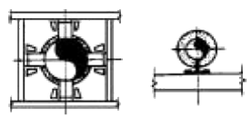
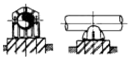
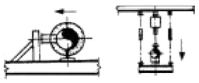
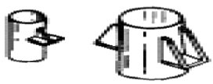
(정답률: 90%)
46. 보기와 같은 배관 라인 인덱스에서 관에 흐르는 유체의 종류는?
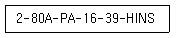
- 작업용 공기
- 프로세스 유체
- 계기용 공기
- 연료 가스
(정답률: 82%)
47. 다음 도시 기호 중 접속된 계기가 온도계인 것을 나타낸 것은?
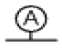
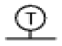
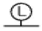
(정답률: 92%)
48. 일반적으로 입체도와 같은 등각 투영법으로 제도하며 스풀도(spool drawing)라고도 하는 것은?
- 계통도 (flow diagram)
- 배치도 (plot plan)
- 부분 조립도 (isometrical piping drawing)
- U.F.D (Utility Flow Diagram)
(정답률: 80%)
49. 배관 도시기호 중 밸브가 닫혀있는 상태를 표시한 것이 아닌 것은?
(정답률: 72%)
50. 보기와 같은 입체도의 평면도로 가장 적합한 것은?
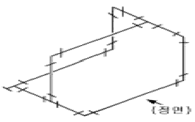
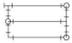
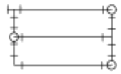
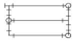
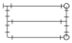
(정답률: 89%)
51. 배관 도면에서 라인 인덱스에 관한 설명으로 가장 적합한 것은?
- 프로세스 인덱스만을 표시한다.
- 제작에 필요한 제작 공정도를 의미한다.
- 배관계통과 운전조작에 필요한 상세작업 계통도이다.
- 배관에서 장치와 관에 번호를 부여, 공사와 관리를 편리하게 한 것이다.
(정답률: 76%)
52. 보기와 같은 90°, 60°, 30°로 이루어진 직각 삼각형 모양의 앵글 브래킷의 C 부 길이는 약 몇 mm 인가?
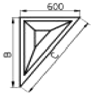
- 1800
- 1040
- 1200
- 1800
(정답률: 88%)
53. 관의 높이 표시 기호 중 관 윗면까지의 높이를 나타내는 기호는?
- BOP·EL
- EL
- TOP·EL
- FL·EL
(정답률: 84%)
54. 배관 도면에서 부속에 ECC.RED 로 표시된 부분이 뜻하는 것으로 가장 적합한 것은?
- 신축이음
- 열교환기
- 동심레듀셔
- 편심레듀셔
(정답률: 66%)
55. 파레토그림에 대한 설명으로 가장 거리가 먼 내용은?
- 부적합품(불량), 클레임 등의 손실금액이나 퍼센트를 그 원인별, 상황별로 취해 그림의 왼쪽에서부터 오른쪽으로 비중이 작은 항목부터 큰 항목 순서로 나열한 그림이다.
- 현재의 중요 문제점을 객관적으로 발견할 수 있으므로 관리방침을 수립할 수 있다.
- 도수분포의 응용수법으로 중요한 문제점을 찾아내는 것으로서 현장에서 널리 사용된다.
- 파레토그림에서 나타난 1∼2개 부적합품(불량) 항목만 없애면 부적합품(불량)률은 크게 감소된다.
(정답률: 44%)
56. nP관리도에서 시료군마다 n=100 이고, 시료군의 수가 k=20이며, ΣnP = 77이다. 이때 nP관리도의 관리상한선 UCL을 구하면 얼마인가?
- UCL = 8.94
- UCL = 3.85
- UCL = 5.77
- UCL = 9.62
(정답률: 40%)
57. 수요예측 방법의 하나인 시계열분석에서 시계열적 변동에 해당되지 않는 것은?
- 추세변동
- 순환변동
- 계절변동
- 판매변동
(정답률: 61%)
58. 다음 내용은 설비보전조직에 대한 설명이다. 어떤 조직의 형태인가?
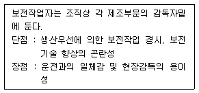
- 집중보전
- 지역보전
- 부문보전
- 절충보전
(정답률: 68%)
59. 원재료가 제품화 되어가는 과정 즉 가공, 검사, 운반, 지연, 저장에 관한 정보를 수집하여 분석하고 검토를 행하는 것은?
- 사무공정 분석표
- 작업자공정 분석표
- 제품공정 분석표
- 연합작업 분석표
(정답률: 74%)
60. 다음 중 검사를 판정의 대상에 의한 분류가 아닌 것은?
- 관리 샘플링검사
- 로트별 샘플링검사
- 전수검사
- 출하검사
(정답률: 82%)